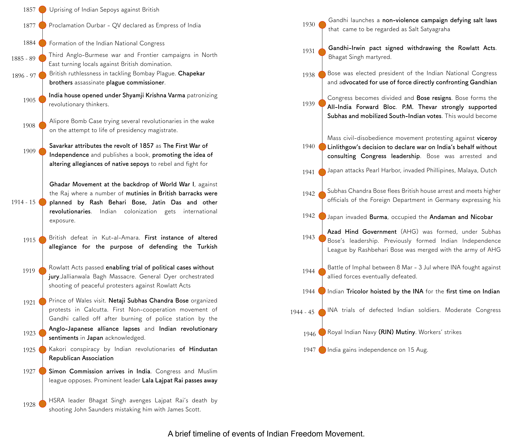
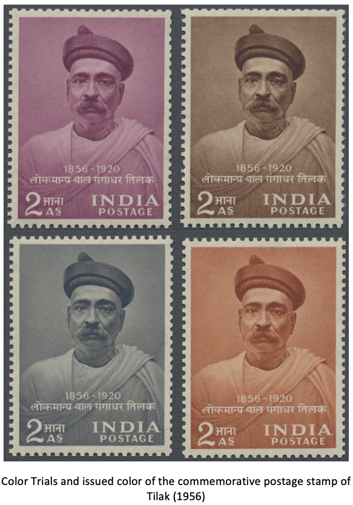
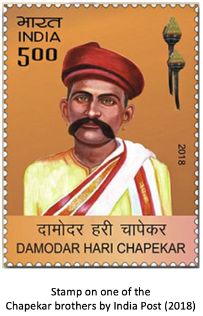
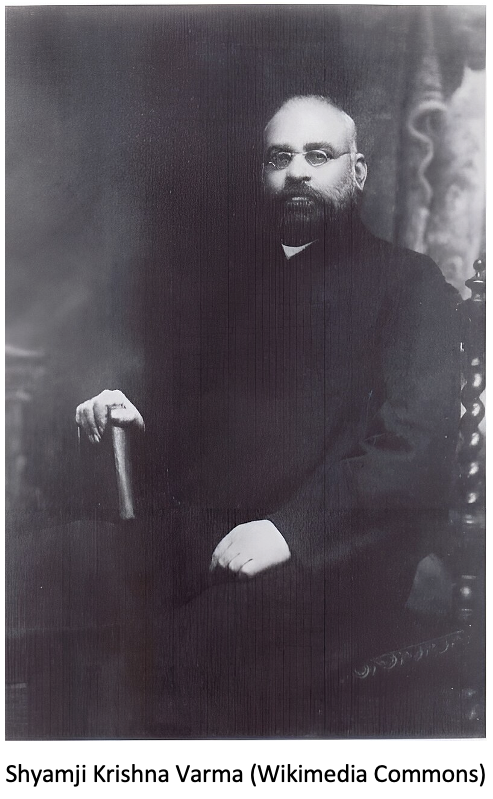
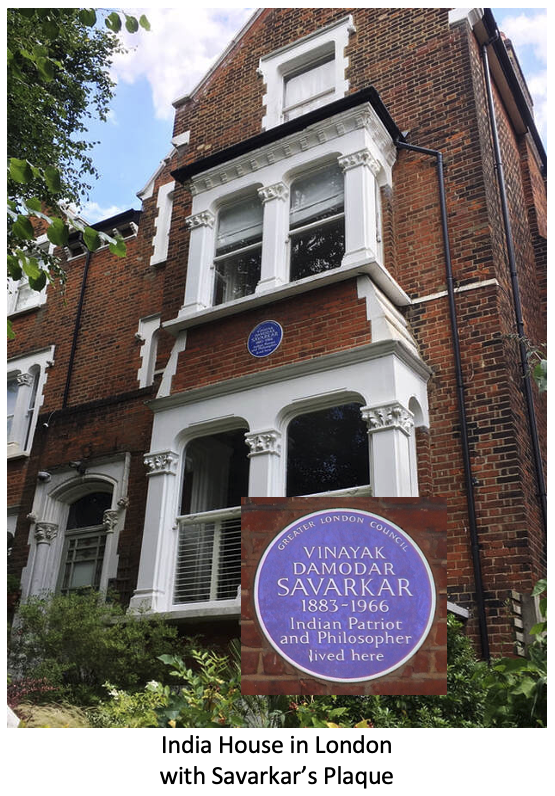
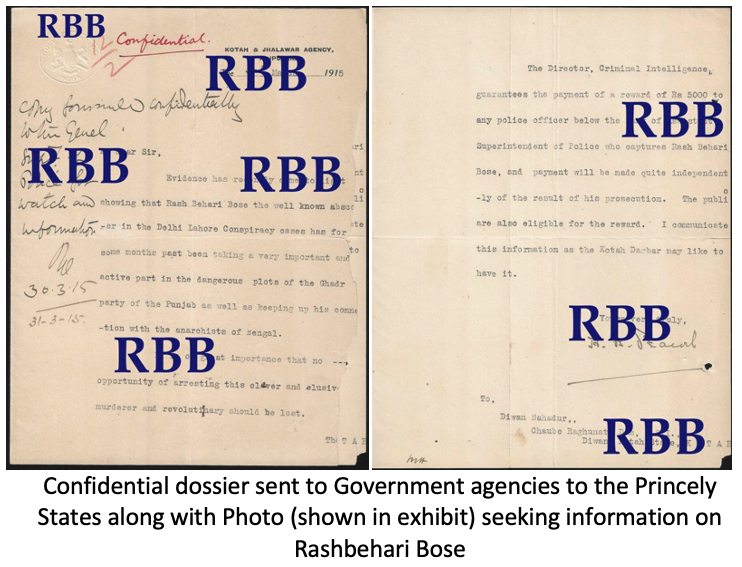
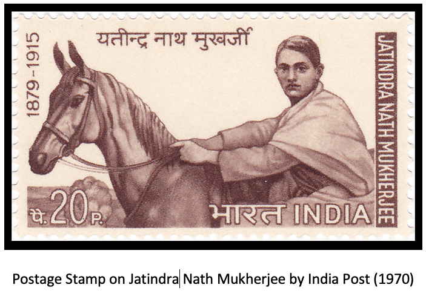
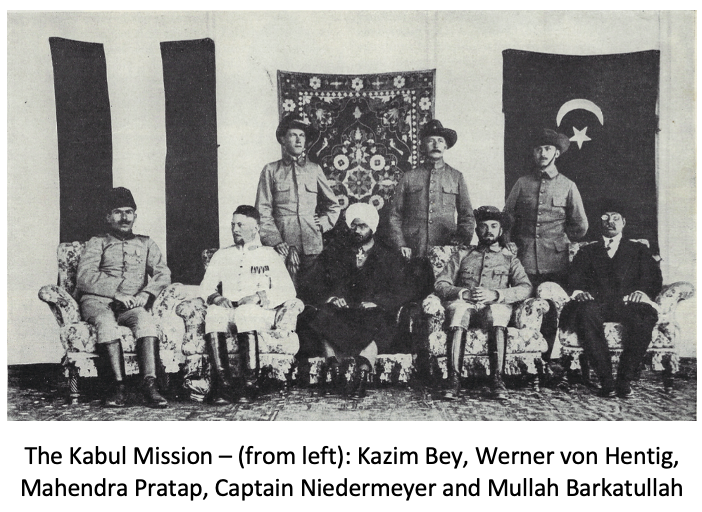

The history of India’s freedom struggle is complex as opposed to
the largely accepted view that the non-violent opposition spearheaded by Mahatma Gandhi was the
sole factor factor that led to India’s independence from British rule.
Gandhi's role is somewhat retrenched by Clement Attlee’s
statement [1] on the role of the non-violent movement
in driving the British to leave India hastily was minimal, and that
erosion of loyalty to the crown among the Indian Army
and Navy because of Netaji Subhas Bose’s military activities was the principal cause.
However, neither the non-violent movement nor the sustained armed resistance can be meaningfully
comprehended without each other, and a holistic approach
needs to be adopted. This exhibit highlights the consummation of
the revolutionary armed movement during the World War 2 with political and military
support of the axis forces. This page aims to broaden the understanding of prior events
and shed light upon conceptualization, trials, and final execution of the armed
struggle for Indian independence whose psychological impact shook the foundations of the
British rule in India and hastily precipitated independence. It must be stated that
a hasty independence was not favorable for India due to the horrors of holocaust that ensued
because of partitioning the subcontinent based on religious lines. A brief timeline is provided.

Since this is a postal history exhibit,
unused stamps and essays displayed on this page in a 'topical sense'
are NOT a part of the main exhibit.
20th Century
British colonial conquests in the Indian subcontinent faced military opposition from
local nobility and traditional social groups between 1757 and 1857.
This precipitated the Revolt of 1857-59 that was crushed by the British.
India came under the crown and natives and rulers of kingdoms were
forced to accept political subjugation by the British.
However, for the first time since Clive's victory in 1757, the British experienced
mass violence from a diverse group of people rising against their hegemonic attitudes.
Extremely cautious, it took the British government 20 years
to formally declare Queen Victoria as the Empress of India in 1877. By then, a formal
modality of freedom struggle was beginning to take shape, espoused by Ganesh
Vasudeo Joshi's statement in the Proclamation Durbar,
asking QV to grant the Indians same rights as her British subjects [2].
After the death of between
5-9 million native Indians [3] in the raging famine of 1876-78,
Allan Octavian Hume, with extreme desperation, established in 1885, a common platform,
the Indian National Congress (INC) to discuss
and debate the Indian state-of-affairs. While British economic policies and
territorial campaigns emaciated
the subcontinent, the INC was merely a show, for, the first president was a servile anglophile,
W.C. Bonnerjee who lived the life of an Englishman and even ridiculed any form of political dissent
[4]. Nonetheless, the INC eventually, grew beyond a
debating society in the late 1890s due to the emergence of new leaders, in particular
Bal Gangadhar Tilak, who could put forward Indian demands with new aggression.

The famines, epidemics and political mobilization of Tilak
provided the broader political context for active dissent
evidenced by the assassination of the plague commissioner of Poona,
Walter Rand, by the Chapekar brothers in 1897. This act was a
revenge against the British indifference to Indian customs and values.
A bubonic plague was raging through Poona during 1895-96, and
under Rand\’s instructions, constables raided homes, burnt down property, molested women, and desecrated religious shrines.
Chapekar brothers were eventually tried and executed which made them martyrs.
Additionally, Tilak's arrest made him a popular leader among growing nationalist movements in
other presidencies as well. Although the Chapekar brothers were not a part of any broader network,
it is widely accepted that this incident gave rise to the spirit of revolutionary
nationalism in India [5], [6].

Early 20th Century
As a consequence of rising nationalism in the subcontinent,
the British implemented the controversial Partition of Bengal in
1905 to disrupt the feeling of unity among the two major religious
communities in the Bengal province - the Hindus and the Muslims.
This stimulated radical nationalist opinions in India and
abroad. Moreover, British educational establishments as a
part of Macaualyism [7],
exposed Indians to the European thoughts.
The wars that led to Italian unification and independence
had a big impact on the revolutionary thinkers of India.
Revolutionary organizations like Jugantar
and Anushilan Samiti emerged and were responsible for
significant events including assassinations
and attempts targeting civil servants, prominent
public figures and Indian informants.
Around 1905,
Shyamji Krishna Varma founded India House
in London, whose primary purpose was to promote nationalist
opinions in India's favor and promote pro-independence work while
ostensibly providing a residence for Indian students. It
drew several young radical activists such as
Madan Lal Dhingra, Vinayak Damodar Savarkar, Lala Har Dayal among
others [8].

It developed links with the revolutionary movement
in India and nurtured it with arms, funds and propaganda.
Authorities in India banned The Indian Sociologist
and other literature published by the House as "seditious".
Eventually, under V. D. Savarkar's leadership, India House
became a meeting-ground for radical revolutionaries
among Indian students in Britain.
It was Savarkar who introduced the spirit of collective
revolt espoused in the uprising of 1857 and published a
book titled Indian War of Independence .
Savarkar wrote passionately about how native Indians rose
above religious differences to
fight against colonial hegemony. For the first time
the revolt of 1857 was studied critically in detail and
attributed the status of a revolution. It was
concluded that lack of vision in re-construction of a
new and alternative system was the reason for the revolution
not realizing it's desired outcome [9]. He wrote :
Though the plan
of the destructive part of the revolution was complete,
its creative part was not attractive enough.
Nobody was against destroying their English power;
But what about the future? If it was only to re-establish
the former internecine strife, if it was to bring again
the same state of affairs as before, the same Moguls,
the same Mahrattas, and the same old quarrels - a condition,
being tired of which, the nation, in a moment of mad
folly, allowed foreigners to come in - if it were only
for this, the more ignorant of the populace did not think
it worthwhile to shed their blood for it. Therefore,
the revolution worked out successfully as far as the
destructive part was concerned; But, as soon as the
time for construction came, indifference, mutual fear,
and want of confidence sprang up. If there had been
set clearly before the people at large a new ideal
attractive enough to captivate their hearts,
the growth and completion of the revolution would
have been as successful and as grand as its beginning.
Thus, the revolt of 1857 emerged as the ideological
fountainhead of the revolutionary movement. From the context
of Philately, the reason for development of Postage Stamps
of the Provisional Govt. in Germany during WW2, illustrating
the collective vision
of a government, without any substantial evidence
of a postal system, stems from attempting to
correct past mistakes as mentioned by Savarkar.
The fate of India House was sealed when in 1909
in London, Madan Lal Dhingra fatally shot
W. H. Curzon Wyllie, political aide-de-camp
to the Secretary of State for India.
Curzon Wyllie was regarded in The Indian Sociologist
in October 1907, as one of "old unrepentant foes of India
who have fattened on the misery of the Indian peasant (sic.)
since they began their career". Additionally, he was head
of Secret Police and collected substantial intelligence
on Indian radicalist opinion that was finding voice
in contemporary Britain.
In the aftermath of the assassination, India House was suppressed
and its leadership fled to Europe (Germany and France) and the United States
[10].
In Germany, eventually, they formed the Berlin India Committee
that would play an important role during WW1, discussed later.

In the West Coast of the United States, the Ghadar
movement was formed along with the Indian students
and immigrants. The weekly newspaper Ghadar,
first published in November 1913, spread revolutionary
ideas and opinion pieces, and were published in multiple
Indian languages to reach a broader audience. Shortly after,
World War 1 broke out and the revolutionaries found an opportunity
to further their anti-British agenda.
In India, matters reached a climax
in the 1912 Delhi-Lahore conspiracy case when
Rashbehari Bose and Sachindra Nath
Sanyal masterminded the
attempted assassination of
the-then Viceroy of India, Charles Hardinge . Both
Several members of the Anushilan Samiti were
arrested and sentenced. Rashbehari Bose was implicated
and he went underground. While underground he
came to be in close association with Jatindra Nath Mukherjee
- a revolutionary leader of the Jugantar Pary. This
strategic association would be paramount to
the revolutionary movement shortly after when the
Ghadarites in the USA and the revolutionaries in India, would
be connected by the Komagata Maru incident.

Komagata Maru was a Japanese ship carrying Indian passengers
seeking to immigrate to Canada in early 1914. Upon arrival in Vancouver
on 23 May, 352 out of 376 passengers were denied entry.
At the time,
Canada had strict immigration laws that aimed to
limit the entry of non-white immigrants.
The "Continuous Passage" regulation required immigrants
to arrive directly from their country of origin, which was
nearly impossible for those coming from India due
to the distance and lack of direct shipping routes.
Upon arrival, the passengers not even allowed
to disembark. The ship remained in the
harbor for two months, during which the passengers
faced challenging conditions with limited access
to food and water. The local South Asian community
tried to provide assistance, but their efforts were
blocked by the authorities.
Eventually, the ship was forced to return to India.
Upon arriving in Calcutta (now Kolkata), British authorities
saw the passengers as potential political agitators
primarily because of the political uneasiness it caused in
Canada and that it was chartered by a member of the Ghadar party
[11].
In a confrontation with police, 19 passengers were
killed, and many others were arrested or injured.
The Kamagata Maru incident inflamed passions and gave
a massive boost to the cause of the Ghadar movement.
It made the case of racial injustice and oppression
faced by Indians abroad. Right after this event, a
few members of the Ghadar party
including Ganesh Vishnu Pingle, Satyen Bhushan Sen and
Kartar Singh Sarabha, sailed to India in October 1914.
Satyen Bhushan Sen was the emissary of Jatindranath Mukherjee
in the Ghadar party. The aim of the Ghadar party now
became to join forces with Indian revolutionaries of
Anushilan Samiti and
Jugantar and incite a revolution across multiple barracks in
the British empire.

World War 1
Right after, World War 1 broke out that provided a
strategic opportunity to the revolutionaries. Upon `
return to India, Ganesh Pingle met with Jatin Mukherjee
through Satyen Bhushan Sen and was introduced to
Rashbehari Bose in exile in Bangalitola, Benares.
The Revolutionary movement found a new and effective
leader in Rashbehari Bose, who along with other members
of Anushilan Samiti in Bengal and Ghadar branch in the Punjab ,
made strategic and intricate plans of smuggling arms
into India (Annie Larsen Affair),
made effective bombs and met secretly
with native Indian leaders of Indian barracks to
organize mutinies.
However, the plans fell through because of betrayal and British
intelligence efforts. The Singapore
mutiny of February 1915 at Tanglin Barracks [12],
was perhaps the only event that was impactful,
but was suppressed and the mutineers were executed.
Key members including Pingle were arrested, in March 1915,
and Rashbehari Bose escaped to Japan.
Halbmondlager Camp, Niedermayer-Hentig Expedition and Afghan Wars
In World War I, several native Indian soldiers of Islamic faith
fought on behalf of the Allies, primarily from the British side. Several
of these soldiers were captured by the Central Powers (Germany, Austria-Hungary,
Bulgaria and the Ottoman empire). These Muslim PoWs were housed in the
Halbmondlager camp in Zossen, Germany where they were ideologically
motivated to wage Jihad against the Allied forces.
Max von Oppenheim
published propaganda magazines in multiple languages for this purpose
and was closely associated with
the members of the Berlin India Committee. This emerged
to be a significant strategic initiative to de-stabilize British
War efforts especially in Afghanistan.

The frontier between India and Afghanistan has always
been used as Gateway to India
and disrupting the British influence on the neutrality of Afghanistan in WW1 was the focus of
revolutionary thinkers. With this aim, the Kabul mission
or the
Niedermayer-Hentig Expedition
,
was sent to Afghanistan to influence the Emir declare full independence
and enter the war on the side of the Central Powers. It was led
by Raja Mahendra Pratap and members of the Berlin Committee.
Britain saw this expedition as a serious threat and
waged covert intelligence operations to maintain Afghan neutrality.
The expedition failed to achieve its objective but influenced several
important events such as campaigns against the tribes who were
against the Emir's support of the British. Additionally,
the news of the siege of Kut-Al-Amara and defection of Indian
Muslim soldiers to turn favorable towards the Turkish Caliphate
had a strong psychological impact on the natives of Afghanistan who
became ideologically favorable towards the idea of Jihad against the British
[13].
The Emir was eventually
assassinated in 1919, which in turn precipitated the Third Anglo Afghan War. It
also influenced the
Kalmyk Project
,
of Bolshevik Russia to propagate Socialist
Revolution in Asia with the aim of overthrowing British control over Asia.
Post World War 1
After the conclusion of World War I, the British passed anti-sedition laws,
specificially, the Rowlatt Acts, that authorized British government to imprison any
person suspected of terrorism or revolutionary activity without trial
and to detain them for up to two years. When a peaceful protest was
taking place against the Rowlatt Acts, in Jallianwala Bagh in April 1919,
General Dyer with his regiment consisting of native Indian sepoys surrounded
these protesters, blocked all the exits, and fired several rounds of ammunition
killing nearly 1300 men women and children [14]. This vile act came to be regarded
as the
Jallianwala Bagh Massacre
and gave impetus to both eventual revolutionary
activities and the Gandhian non-cooperation movements.
By the end of WWI, Gandhi entered Indian politics.
Since then, Gandhian non-violent non-cooperation
movements dominated the narrative of
Indian freedom movement up until the 1930s where several important
legislative decisions on India would be made.
While the siege of Kut-Al-Amara had a profound impact
on the revolutionary movement led by Raja Mahendra Pratap,
Gandhi leveraged the incident to launch the
Khilafat Movement
in 1919. This is one of several instances where
singular events have been leveraged by two ideologically
different narratives of the Indian freedom movement,
and perhaps makes a strong case against the adoption
of a singular dominant narrative to explain history.
By 1920, Subhas Chandra Bose entered Indian politics and became
influenced by Gandhian non-violent movements
and actively participated in protest marches
espousing Civil Disobedience.
He was one of the most influential leaders to organize protests during
the Prince of Wales’s visit to Calcutta
among the nationwide protests that happened during 1921-22.
Another dominant influential movement that impacted
Indian freedom movement was Pan-Asianism that explicitly supported
revolutionary ideologies. The spirit of Asia for Asians or development
of a Greater East Asia Co-prosperity sphere had deep political connections
to Japan granting Rashbehari Bose political asylum. Rashbehari Bose would
eventually be granted citizenship of Japan and thus,
the pressure to hand him
over to the British government by Japanese authorities would wane.
Rashbehari Bose, Mahendra Pratap, Subhas Chandra Bose and several other
exiled Indian nationalists would keep the revolutionary movement
alive through various organizational propaganda. But the real
push in their favor arrived during the second World War.
By late 1930s, Subhas Chandra Bose, contested the election of
presidentship of the Indian National Congress in the Haripura
Session and attempted to persuade
Congress’ ideological departure from Non-violence.
These discussions had emerged during the beginning of World War 2 where the
role of Indians cooperating with British war efforts was being debated. This
led to Subhas Bose’s ceremonious falling-out with Gandhi and Nehru of the INC.
This marks a turning point in the Indian freedom movement. Falling out
with the Congress leadership was also strategic politically.
The Congress and the
Muslim League
were engaged in leadership battles and Subhas Bose with an already
strong support within the INC, mobilized support of the Muslim League
by engaging in local politics and spearheaded the removal of the
Holwell Monument
in Calcutta. The British authorities saw Subhas Bose as a serious threat,
who could unify and mobilize a concerted and unified anti-British
sentiment in India. Subhas Bose was soon put in house-arrest.
World War 2, Indian Legion and Independence Leagues
In Japan, Rashbehari Bose had been closely following the development of
events. By 1940, he was a well-respected member of the expatriate Indian community
in Tokyo and kept up correspondences with many Indian leaders including those of the INC.
He authored articles regularly in the local dailies in Japan to influence and inform
the local expatriate Indian community on the goings-on in India. It is suggestive from
his writings that although he appreciated Gandhi’s ability to mobilize the masses,
he was let down by the latter’s conciliatory and moderate attitudes towards the British.
On the other hand, he had high regard for Savarkar, who by late 1930s had been released
from prison.
Rashbehari Bose formed the Indian
Independence Leagues (IIL) that mainly comprised of Indian expatriate associations
in Japan and South-East Asia. In March 1942, Rashbehari organized a conference in
Tokyo where a resolution to form the Indian National Army, or the Azad Hind Fauj
was passed. IIL got a big boost after the fall of Singapore when several British
Indian soldiers became Japanese prisoners of war (PoW), a significant portion
of whom were swayed
to alter their allegiance and engage in military combat against the Allied forces
in the impending Burma campaign. By the end of 1942, around 40,000 prisoners of
war had signed up along with several expatriate Indians, mostly Tamil, living
in Singapore and Malaya. The objective of the INA was explicitly clear.
It was not to replace British colonial rule with a Japanese vassal state, but to
liberate India as an Independent nation. The INA used Japanese
official bureau pictorial magazines to propagate and publicize
its objectives against British imperialism. During WW2, These
magazines had the highest number of circulation[15].
However, the INA
was suffering for a leadership vaccuum as Rashbehari Bose’s health was
deteriorating sharply and in his own words he was willing himself on
with the following words: “I was a fighter. One more fight, the last and the
best [16].
By 1942, Subhas Bose fled house arrest in Calcutta,
reached Germany, and formed the Indian Legion out of
British Indian PoWs held there. In early 1942, Bose met
with Hitler to discuss the latter’s support in Indian struggle
for freedom. Hitler held strong racist views towards Indians and was
non-committal to Indian independence from the British.
The meeting with Hitler did not precipitate any tangible
plans and by now, Rashbehari Bose urged Subhas Bose to take over the IIL.
Traveling safely from Germany to Japan was no easy feat in 1943 and after
a perilous submarine journey Subhas Bose reached Sumatra and from thence
to Tokyo. In Tokyo, Subhas Bose got acquainted with the Japanese leadership
[17].
In July 1943, Subhas Bose reached Singapore and ceremoniously took over the
leadership of the INA and the IIL. In October 1943, the formation of the
Provisional Govt. of Free India (Arzi Hukumat-e-Azad Hind) was announced
with Subhas Bose sworn in as the head of state and premier Rashbehari Bose
was given the title of supreme adviser. The INA became the official army of
the Azad Hind Government [18]. By November, t
the Japanese-occupiedAndaman and
Nicobar Islands were handed over to the Azad Hind Government, thereby granting
it legitimacy in international law. This episode is extremely important since
the Andamans were a strategic location in South-East Asian politics,
and served as a British penal colony where several revolutionaries
including Savarkar were
jailed being subjected to most draconian inhuman conditions. Several
revolutionaries lost their lives and most of the survivors reportedly
suffered post-traumatic stress disorder.
A page from Shashin Shuho informing Subhas Chandra Bose's involvement with Congress Politics and Departure
While the INA had leadership even before the arrival of Subhas
Bose, its explicit role to fight alongside the Japanese in the
ensuing Burma campaign was negotiated with conviction by the latter.
Burma was an extremely important British colony and was
annexed to the Indian empire post the third Burmese war in 1886, and
eventually a separate colony in 1937. However, the local Bamar people were
wary of the Indians in Burma who worked for protecting British interests
and during WW2, they were able to negotiate concessions with the British.
Burma, served as the gateway to India from the east. The Chin Hills
region that were annexed to the British empire during the Third Anglo
Burmese war, will be the center of conflict between the Japanese forces
and the British that would springboard further campaigns in India.
By early 1944, it was decided that the INA would fight alongside
the Japanese in their offensive campaigns U-Go and Ha-Go.
The Battle-Cry of the INA was ‘Chalo Delhi’ (“March onto Delhi”)
that evoked a vision of eventually marching into Delhi’s Red Fort –
the citadel symbolizing united front against British imperialism that
fell during the revolt of 1857, a symbolism that was derived from the
revolt of 1857. Netaji envisioned that when the INA would march into India,
the entire Indian population would rise in revolt and
spark a nationwide rebellion against the British.
Although the Japanese were initially successful, the Allied forces
were extremely agile with their communication lines and moreover,
the weather was unfavorable to the Japanese and the INA that led to
their eventual defeat in the Imphal and Kohima campaigns.
A Page from London Illustrated News (1946) chronicling the riots that took over the country during the INA Trials
The British left no stones unturned to debase defecting soldiers
of the INA and celebrated victory over the Japanese with much vigor
as evidenced through special victory propaganda, philatelic no less.
Their primary aim was to evoke a negative sentiment against the Indian
soldiers and gain sympathy from the Indian subjects. This effort backfired.
When Indians came to learn about the bravery of the INA soldiers,
they sympathized with them. This led to multiple revolts and strikes.
The INA soldiers were tried in what came to be eponymously known as
the INA trials. Public sentiment was in favor of the INA and eventually
they were acquitted. Nonetheless, their defection would be an inspiration
for the mutiny in the Royal Indian Navy of 1946. A post-war Britain suddenly
found it exceedingly difficult to maintain law and order in a nation full of
rebels and realized it would be impossible to suppress a similar rebellion as
1857. This precipitated Indian Independence on August 15, 1947.
This operation was a mature culmination
of prior events during WW1, as during WW2 it was
not about defecting soldiers trying to disrupt order
in barracks anymore, but it was about defecting soldiers
militarily fighting British forces on Indian soil,
for Indian independence with tremendous
psychological consequence on an entire population.
The scale envisioned was, perhaps much grander than the revolt
of 1857. Netaji's biggest contribution was to
plan and execute such a grand scheme of events.
With only partial success, and backfiring
of British counter-propaganda attempting to denigrate
defecting British-Indian soldiers, the entire nation
became enraged and even the INC that Netaji left due
to ideological differences, would cash in, and emerge
as the leading party to which power would be transferred
post independence.